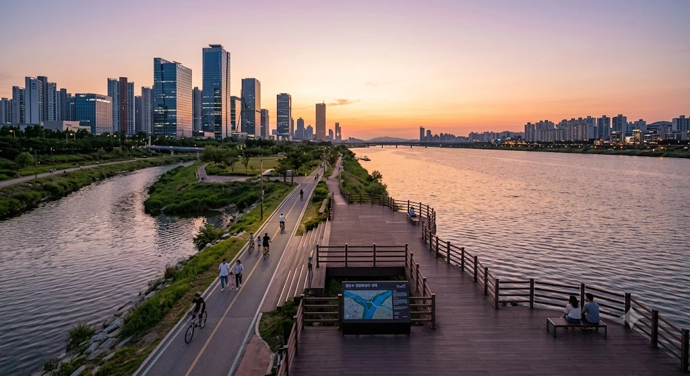

중수강변공원

효빈광역시 관내 주요 공원
[ 접기 ]
| 북구 | 시청 · 사가당 · 진희 · 고송 · 중수강변 · 중수해안 · 월음 · 고송강변 · 목금 · 평전 · 귤발 · 굴회 · 삼성 |
|---|---|
| 중구 | 효빈성 · 조유 · 구보 · 내조 · 소장해변 · 어신 · 골만 · 내조공원역 |
| 동구 | 결나 · 사가당 · 천풍 · 전채 · 삼댁 · 전야 · 고속철도 · 동구청 |
| 남구 | 창문 · 소궁 · 이파 · 명주 · 어간 · 곽산역 · 기랑 · 석무 · 백생 · 평당중앙 · 국목 · 봉전 · 강번 · 리어 · 능남 · 항동삼각 · 곽암 |
| 서구 | 효빈성북문 · 칠천군사기지터 · 송진 · 청덕 |
| 청엽구 | 비마리유적사거리 · 청엽삼각 · 청엽구민 · 남전 · 상미 · 주음 · 관협 · 효빈교통문화 |
| 창전구 | 전중 · 마시 · 광정 · 보통 |
| 안천구 | 이자 · 팔망성 · 백합 · 안천가변 · 하가 · 치구역 |
| 탄성군 | 탄성 · 다이아 · 루비 · 아이스크림 · 고무 · 명채 · 말우 · 공리 · 상량 · 고해역철도 · 승남 |
중수강변공원
Jungsu Gangbyeon Park
Jungsu Gangbyeon Park

| 소재지 | 효빈광역시 북구 중수동 (팔천강·회리천 합수부 일원) |
|---|---|
| 종류 | 수변공원, 근린공원 |
| 인접 시설 | 팔천강, 회리천, 북구청역 |
| 관리 주체 | 효빈광역시 북구청 공원녹지과 |
| 연계 교통 | 1호선 6호선 북구청역 도보 5분 |
"카스밍의 귀여운 강바람과 에리치카의 하라쇼한 물결이 하나로 만나는 기적의 합수부."
1. 개요
효빈광역시 북구 중수동에 위치한 탁 트인 수변공원이다. 효빈시를 관통하는 거대한 본류인 팔천강과, 도심 한가운데를 굽이쳐 흘러온 회리천이 최종적으로 하나로 만나는 '합수부(合水部)'에 길게 조성되어 있다.
법조·행정 타운인 중수지구의 거대한 마천루들과 푸른 강물이 어우러져, 낮에는 직장인들의 훌륭한 산책로로, 밤에는 야경을 즐기는 시민들의 핫플레이스로 기능한다. 무엇보다 북구청역에서 엎어지면 코 닿을 거리에 있어 대중교통 접근성이 효빈시 수변공원 중 최상위권에 속한다.
2. 주요 시설 및 특징
- 탁 트인 팔천강 파노라마 뷰: 두 강이 만나는 지점답게 강폭이 매우 넓어 바다를 보는 듯한 시원한 개방감을 준다. 날씨가 맑은 날에는 강 건너편의 동구 스카이라인까지 한눈에 들어온다.
- 국토종주 자전거길 연계: 팔천강 자전거도로와 회리천 자전거도로가 만나는 교차점이다 보니, 자전거 동호인들의 필수 휴식처이자 성지로 꼽힌다. 주말이면 알록달록한 라이딩 복장을 한 자전거 부대가 공원 편의점을 싹쓸이하는 광경을 볼 수 있다.
- 합수부 생태탐방로: 하천 복원 사업을 통해 조성된 갈대밭과 억새 군락지가 펼쳐져 있다. 물이 맑아 천연기념물인 수달이나 왜가리 등이 종종 목격되기도 한다.
3. 서브컬처 성지로서의 위상
이 공원이 효빈시 서브컬처 팬덤에서 각별한 대우를 받는 이유는 바로 지명이 빚어낸 세계관 대통합 때문이다.
- 이 공원이 속해 있는 중수동은 《니지가사키 학원 스쿨 아이돌 동호회》의 나카스 카스미(中須かすみ)를 상징하는 지역(일명 '카스밍 랜드')이다.
- 이곳으로 합류해 들어오는 회리천은 《러브 라이브!》 뮤즈(μ's)의 아야세 에리(絢瀬絵里)를 상징하는 하천(일명 '에리치카의 성수')이다.
결과적으로 중수강변공원은 "카스미의 땅으로 에리의 물줄기가 흘러들어오는 기적의 교차점"이 되었다. 덕분에 주말만 되면 이 두 캐릭터의 네소베리나 아크릴 스탠드를 들고 와 강물을 배경으로 인증샷을 찍는 오타쿠들을 심심치 않게 볼 수 있다. 팬들 사이에서는 이곳 벤치에서 파는 빵(카스밍의 상징)을 먹으며 "하라쇼!"를 외치면 가챠 운이 대폭 상승한다는 출처 불명의 괴담이 떠돌고 있다. 물론 지나가는 동네 어르신들 눈에는 그저 강바람 쐬는 청년들일 뿐이다.
4. 연계 교통
- 도시철도: 1호선 6호선 북구청역에서 내려 도보로 5분 이내에 강변 진입이 가능하다. 구도심과 신도시를 잇는 1, 6호선 환승역이라 효빈시 어디서든 접근성이 깡패 수준이다.
- 버스: 중수지구 법조타운을 경유하는 수많은 지선/간선 버스들이 북구청역 교차로를 지나므로 환승이 매우 편리하다.
5. 여담
- 여름밤이 되면 공원 일대는 사실상 거대한 야외 호프집으로 변한다. 강바람을 맞으며 치맥을 즐기려는 직장인들과 대학생들로 돗자리 깔 곳을 찾기 힘들 정도다. 인근 편의점 매출이 효빈시 탑을 다툰다는 소문이 있다.
- 두 강이 만나는 지점이라 그런지 겨울철 칼바람이 상상을 초월한다. 일명 '중수동 똥바람'으로 불리며, 패딩으로 중무장하지 않으면 5분을 버티기 힘들다.
이때만큼은 카스밍의 귀여움도, 하라쇼도 소용없다.